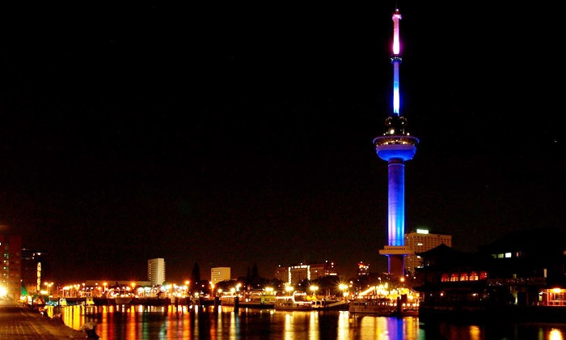

Leroy van den Driesche
About
Ik ben Leroy en ik ben op het moment bezig met een studie informatica aan de hoge school Rotterdam. Voordat ik de studie informatica ben gaan doen heb ik 5 jaar VWO gedaan en ben ik na het laatste jaar overgestapt naar Havo, door de Duitse taal.
Naast studeren doen ik natuurlijk ook andere dingen, 1 van die dingen is mijn sport namelijk bowlen. Het bowlen doe ik ook op redelijk hoog niveau. Een aantal andere dingen die ik graag in mijn vrije tijd doe is bijvoorbeeld gamen en natuurlijk bezig zijn met technologie en computers horen daar natuurlijk ook bij.
Over het algemeen ben ik graag veel bezig met computers en coderen, ik codeer zelf al ook bepaalde mods voor bepaalde games en dit neemt op het moment natuurlijk ook wat vrije tijd in beslag.
Ik ben zelf een persoon die graag op zichzelf bezig is ook al kan ik wel in teamverband werken ik zal niet veel proberen te zeggen, als ik bezig ben met bijvoorbeeld code schrijven of iets anders zal ik meestal helemaal niks zeggen. Dit is vooral voor mezelf aangezien ik beter werk als ik niet aan het praten ben met anderen.
Ik heb scrum leren toe te passen op projecten en zou het kunnen toepassen op een toekomstig project.

Personalia
Naam: Leroy van den Driesche
Geboortedatum: 2 Augustus 1999
Vorige projecten
Dit zijn de ontwerpen en hoe de ontwerpen tot stand zijn gekomen van het eerste project, waar we een bordspel moesten maken. Ik heb de ontwerpen voor het speelbord gemaakt.


Contactinfo
E-Mail: legacystrike1@gmail.com
Telefoonnummer: 06-24133343